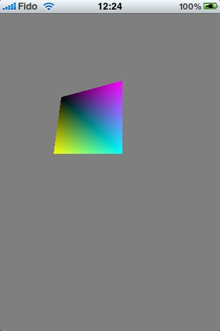

Experiments in OpenGL (on the iPhone 3GS).
While I was at the Toronto iPhone Tech Talks, I attended the OpenGL ES sessions by Allan Schaffer. Seeing the “Shock” demo was really inspiring, and caused me to want to try my hand at some simple OpenGL Shader demos.
The base XCode OpenGL ES Application template sets you up pretty nicely for some simple experimentation, the only things that gave me any trouble were:
-
remembering to set the identifier to ca.latte.whatever so that I could build, and
-
remembering that the OpenGL ES 2.0 path only ran on the device, so of course none of the changes I was making were showing up on the simulator1, and finally
-
Figuring out that depth was position.w, and not position.z. (Did I mention that I’m a bit of a newbie at this?)
Anyways, after it was all up and running, I made the x and w co-ordinates vary on a different period than the y co-ordinate, and now the square moves around in 3 dimensions in a pleasing (to me) way.

Since this is intended for me to play around with shaders, I’m not going to bother updating the OpenGL ES 1.0 code path, but if you’ve got an iPhone 3GS, or a 3rd generation iTouch, feel free to grab the code at BitBucket, and play around. I'll be adding branches and tags and keeping it updated as I play with new stuff.
Comments
Comments powered by Disqus